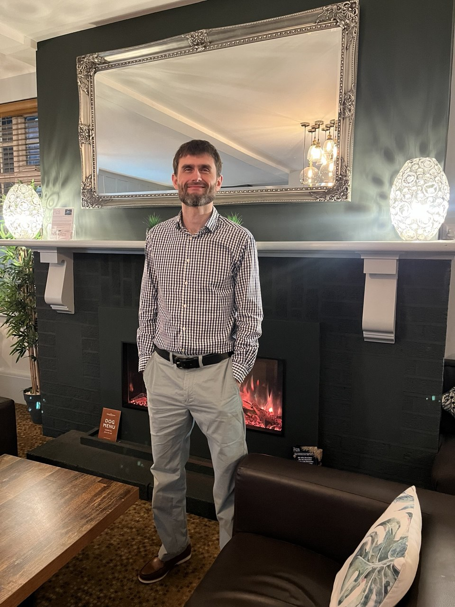

Yurii Piasetskyi
QA Engineer
Email: yuriipiasetskyi1985@gmail.com
Mobile: 0631046161
About Me
I am a QA Engineer with practical experience in various types of testing and documentation writing. My background in management and finance enhances my analytical thinking and attention to detail.
Work Experience
QA Engineer — QALight Outsource
July 2024 – Present · 10 mos | Kyiv City, Ukraine · Remote
Types of testing applied to projects:
- Smoke Testing
- Sanity Testing
- Retesting
- Functional Testing
- Regression Testing
- Usability Testing
- Performance Testing
- Localization / Internationalization Testing
- Compatibility Testing
- System Testing
- Integration Testing
- User Acceptance Testing (UAT)
Documentation Writing:
- Test Plans
- Checklists
- Test Cases
- Bug Reports
- Coverage Matrix
- Test Summary Reports
Head of Intersport Store Department — EPICENTR Group of Companies
December 2015 – October 2023 · 7 yrs 11 mos
Role (January 2019 – March 2023):
- Managed departments in "Intersport" stores across various cities.
- Opened and successfully operated 3 stores (1000–3300 m²).
- Led operations, planning, and team development.
- Boosted KPIs through clear communication and leadership.
Achievements:
- 2020: Organized the RunUkraine event in Kyiv.
- 2023: Delivered 500,000 units for UNICEF humanitarian project.
Education
Kyiv Slavic University
Specialist Degree (equivalent to Master's) — Finance
Qualification: Finance Specialist, Financial Economist
February 2010 – February 2011
- Completed a Specialist Degree in Finance with a specialization in Financial Economics.
- Qualified as a Finance Specialist and Financial Economist.
- Final grade: Good (according to the Ukrainian grading system).